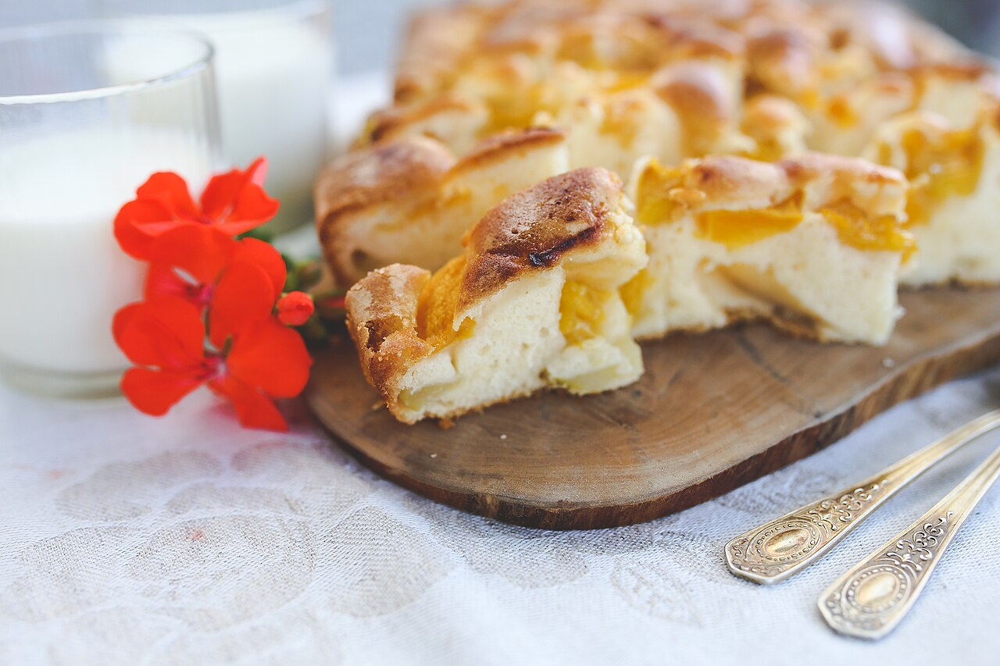
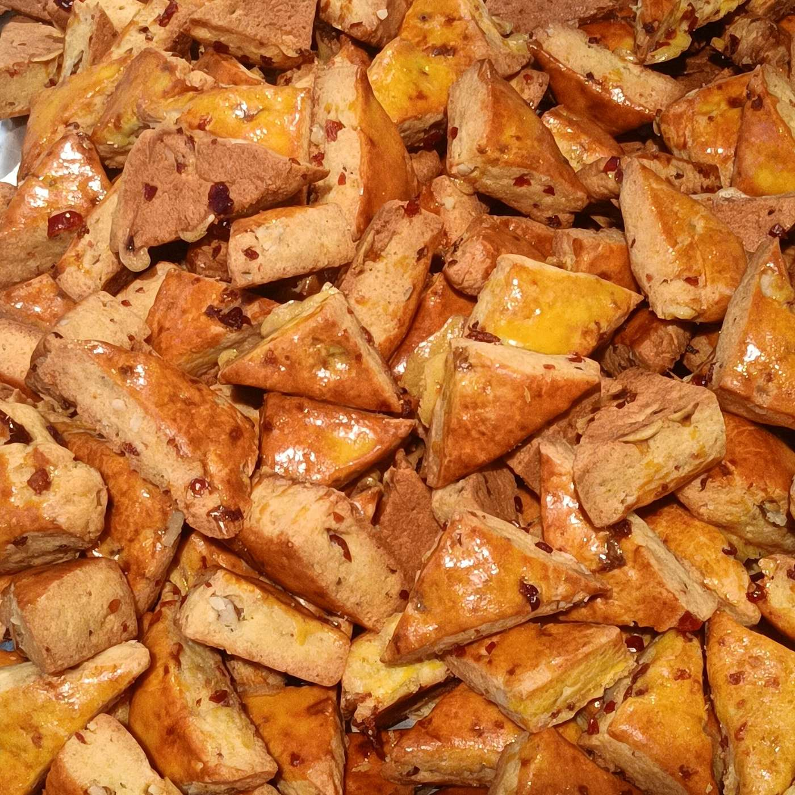
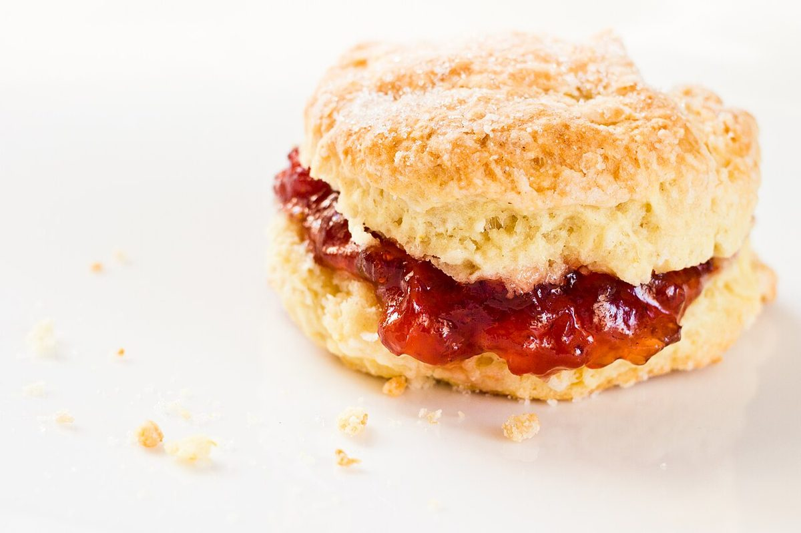

メニュー
主に、キッシュとスコーンを扱っています。種類・価格・営業時間・定休日は準備中です。

イメージ
キッシュ
手のひらサイズ。種類は準備中です。

イメージ
スコーン
焼き立てをお届け。種類は準備中です。

イメージ
通販・ご予約
オンラインショップと店頭ご予約。詳細は準備中です。


手のひらにのるキッシュとスコーン。焼き立てのおいしさを、なみなみと、全国へ。

新居浜市土橋にある、キッシュとスコーンの専門店です。手のひらサイズに焼き上げた焼き菓子を、焼き立ての状態で全国の方へ届けることを掲げています。

お店のInstagramでは、店舗でのご予約と通販(オンラインショップ)の案内が紹介されています。駐車場は20台分あるとのことです。
「なみなみ」「7373」という名前の由来は確認できていません。「あふれるほど満ちた」というイメージは、制作側のイメージです。
主に、キッシュとスコーンを扱っています。種類・価格・営業時間・定休日は準備中です。

手のひらサイズ。種類は準備中です。
焼き立てをお届け。種類は準備中です。
オンラインショップと店頭ご予約。詳細は準備中です。
イメージ例 以下は制作側が作成した例で、実在のお客様の声ではありません。
手のひらサイズなので、午後のお茶にちょうどいい量でした。
焼き立ての香りが良くて、帰り道まで待ちきれませんでした。
遠くの家族にも贈りたいと思える焼き菓子です。
〒792-0043 愛媛県新居浜市土橋１丁目３−２９
電話: 準備中 / 営業時間: 準備中 / 定休日: 準備中 / 駐車場: 20台(店舗Instagramの記載より)
掲載の写真はフリー素材のイメージであり、店舗の実際の様子・商品ではありません。
写真クレジット(creativecommons.org):
scones-cran.jpg / scones-tri.jpg: Fumikas Sagisavas, CC0 1.0。scone-lemon.jpg: Benson Kua, CC BY-SA 2.0(Lemon Scone with Jam)。pie.jpg: www.Pixel.la Free Stock Photos, CC0 1.0。scone.jpg: Kolforn, CC BY-SA 4.0。cookie.jpg: Infrogmation of New Orleans, CC BY-SA 4.0。croissant.jpg: Herry Wibisono, CC0 1.0。flour.jpg: Magnussoder, CC BY-SA 4.0。dough.jpg: Kotivalo, CC0 1.0。plate.jpg: Fructibus, CC0 1.0。ears.jpg: User:Bluemoose, CC BY-SA 3.0。round.jpg: daisybush, CC BY 2.0。